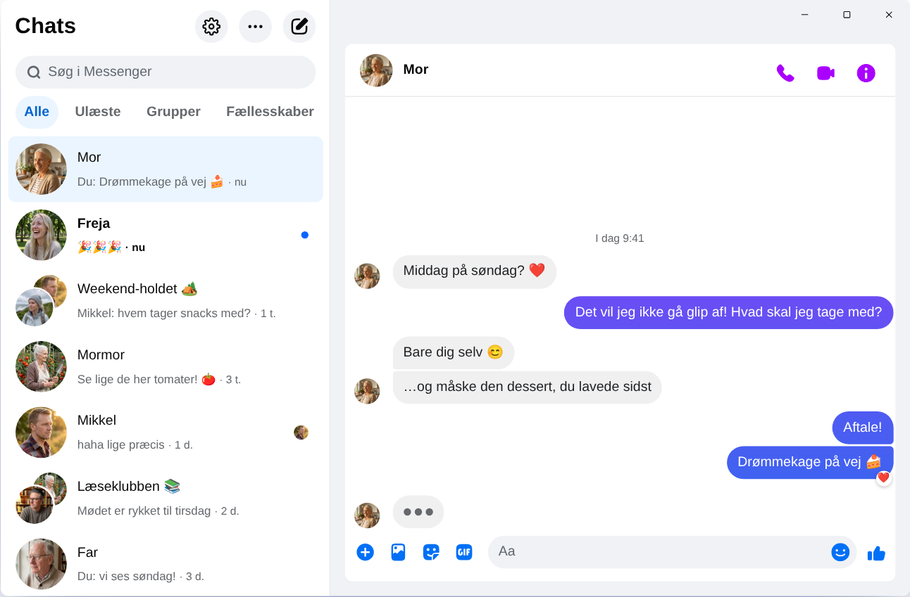

Chatpane / Windows
Opdateret november 2026
Sådan får du Messenger på din computer i 2026
Meta lukkede Messenger-appen til Windows den 15. december 2025, og messenger.com sender dig nu videre til Facebook. Her er det, der virker i dag på en pc eller bærbar med Windows 10 eller 11.
Gratis og open source · Windows 10 og 11 · Ikke en app fra Meta
Kort svar
Der findes ikke længere nogen officiel Messenger-app til computer. Meta har fjernet den fra Microsoft Store, og siden april 2026 virker Messenger på computeren kun på facebook.com/messages, midt inde i Facebook.
Vil du have Messenger i sit eget vindue, uden feed og Reels? Chatpane er en gratis open source-app til Windows, der viser dine chats og ikke andet. Det er et uafhængigt projekt og ikke en app fra Meta.
Derfor virker de gamle vejledninger ikke
Mange vejledninger siger stadig, at du skal finde Messenger i Microsoft Store, og downloadsider tilbyder stadig installationsprogrammet »Messenger 2250.1«. Det er netop den app, Meta lukkede i december 2025: Når du åbner den, sender den dig bare videre til Facebook. Du får intet ud af at installere den.
Skriv heller aldrig din Facebook-adgangskode ind i et program eller på en side, hvis du ikke ved, hvor den kommer fra. Tilbyder nogen dig »Messenger til pc« med sit eget login, så vær på vagt.
Hvad skete der med Messenger til Windows?
I 2024 udskiftede Meta Windows-appen med en pakket webversion. I oktober 2025 meddelte Meta lukningen og fjernede appen fra Microsoft Store, og den 15. december 2025 holdt den op med at virke. I april 2026 var det messenger.coms tur. Datoer og detaljer finder du under hvad der skete med Messenger til computer.
Dine muligheder
Sådan bruger du Messenger på Windows
Chatpane på Windows
Chatpane åbner det samme Messenger, som du ser i browseren. Dine chats, grupper, opkald og billeder er der og holdes synkroniseret med din telefon. Det eneste, der forsvinder, er resten af Facebook.
- Kun Messenger. Facebooks feed, Reels, Marketplace og søgning er skjult.
- Notifikationer, du kan bruge. Svar, reager, markér som læst eller slå lyden fra direkte fra notifikationen, uden at åbne vinduet. Praktisk, når forældregruppen, holdet eller familiechatten skriver hele dagen.
- Proceslinjen og meddelelsesområdet. Antal ulæste beskeder på ikonet, start ved systemstart og, hvis du vil, at Chatpane kører videre i meddelelsesområdet, når du lukker vinduet.
- Privatliv. Skjul, at du skriver, skjul navne og profilbilleder, når du deler skærm, og bloker Facebooks analyseforespørgsler (slået til som standard).
- Open source. Chatpane er open source under MIT-licensen. Koden ligger på GitHub, så alle kan se, hvad appen gør.
- På dansk. Chatpane følger din computers sprog, så menuer og indstillinger vises på dansk.

Sådan installerer du Chatpane
- Hent installationsprogrammet til Windows. Har din pc en ARM-processor, så brug ARM64-versionen.
- Åbn filen. Chatpanes installationsprogrammer til Windows er ikke digitalt signeret endnu, så SmartScreen viser måske »Windows beskyttede din pc«. Klik på »Flere oplysninger« og derefter på »Kør alligevel«. Hent kun Chatpane fra chatpane.app eller GitHub.
- Log ind med din vante Facebook-konto. Dine chats dukker op med det samme.
Vil du ikke installere noget? Den portable version (.zip) kører uden installation og kræver ikke administratorrettigheder.
Ofte stillede spørgsmål
Spørgsmål om Messenger på computeren
Er Chatpane gratis?
Ja. Ingen pris, intet abonnement og ingen reklamer. Chatpane er open source under MIT-licensen, og koden ligger offentligt på GitHub, så alle kan tjekke den.
Er det den officielle Messenger-app?
Nej. Chatpane er et uafhængigt projekt uden tilknytning til Meta. Den viser det rigtige Messenger fra facebook.com/messages i sit eget vindue, så dine beskeder går stadig gennem Messenger, og Metas vilkår gælder.
Virker det uden en Facebook-konto?
Nej. Siden april 2026 lader Meta dig kun bruge Messenger uden Facebook-konto i mobilappen. På computeren kræver både Chatpane og alle andre løsninger en konto, der kan logge ind på facebook.com.
Virker Chatpane på Windows 10?
Ja, på Windows 10 og 11. Chatpane bruger Microsoft Edge WebView2, som følger med Windows 11. På Windows 10 henter installationsprogrammet det, hvis det mangler.
Kan jeg foretage video- og taleopkald?
Ja. Det er hele Messenger, så tale- og videoopkald åbner i deres eget vindue, præcis som på facebook.com.
Hent Chatpane
Gratis og open source. Downloades på få sekunder - den fylder kun cirka 4 MB.
Fås også som: portabel .zip · ARM .exe · ARM .zip
Ældre Intel-Mac? Intel .dmg
Den fulde liste med tjeksummer ligger på
GitHub
- eller brew install --cask kristofferR/tap/chatpane